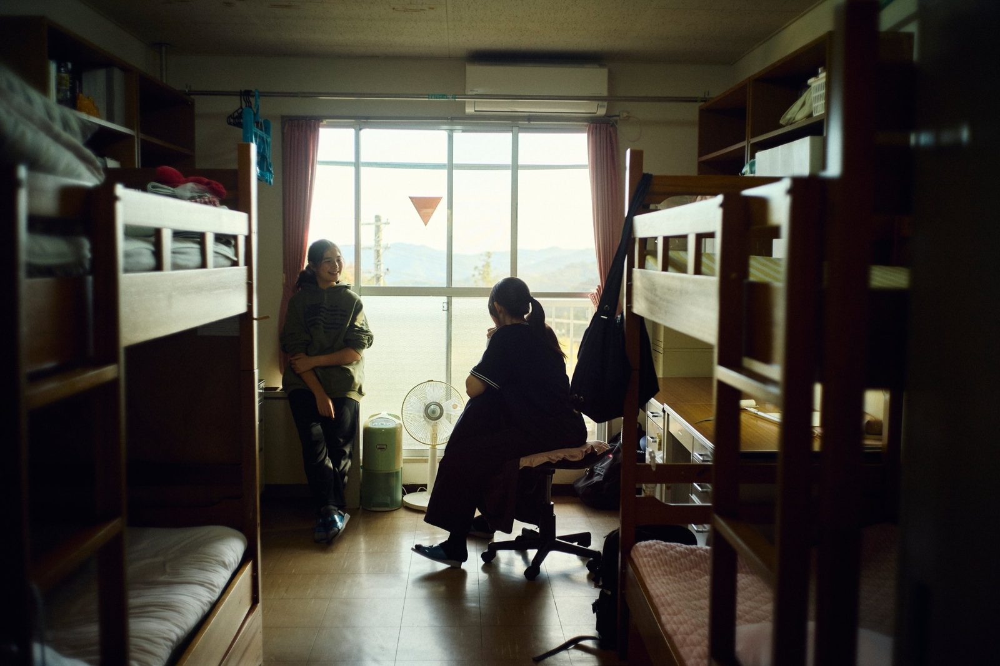
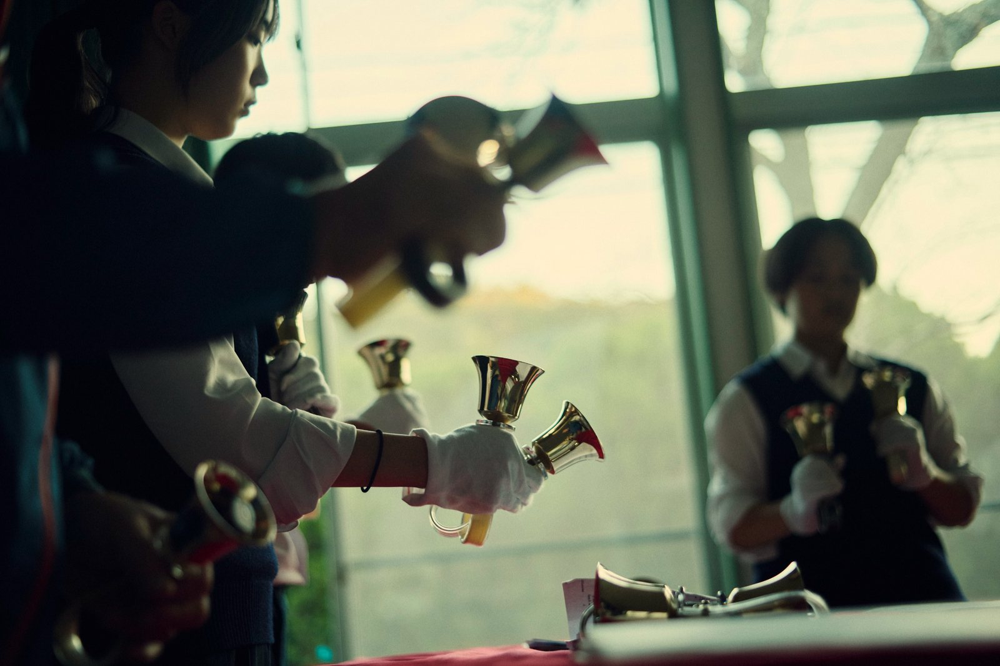
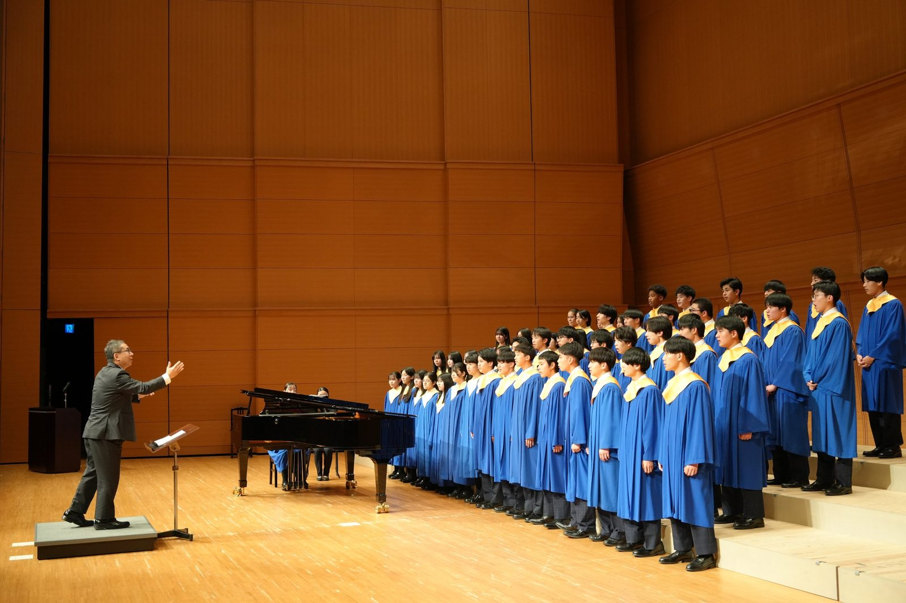
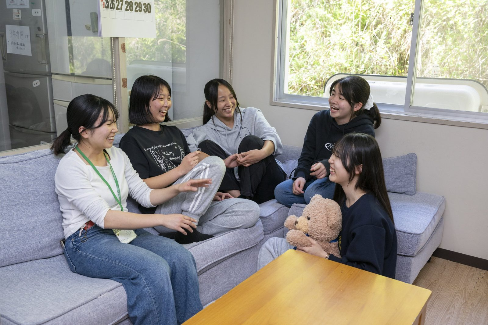
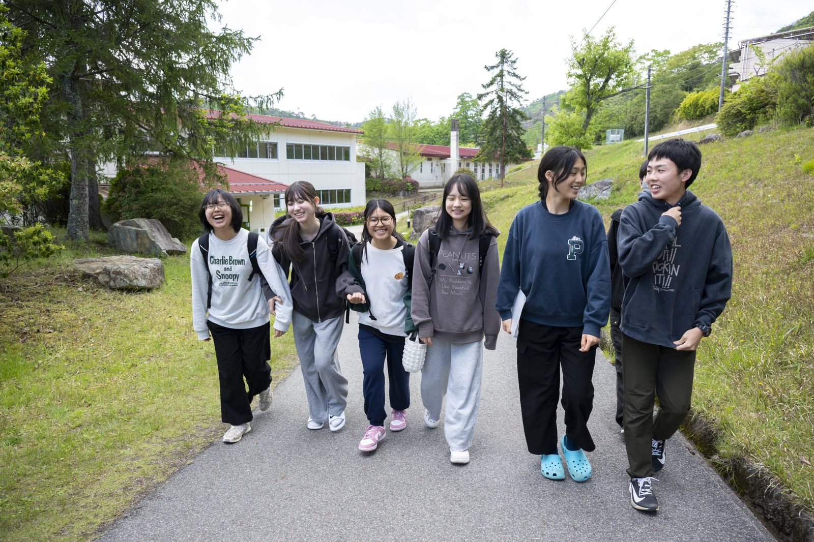
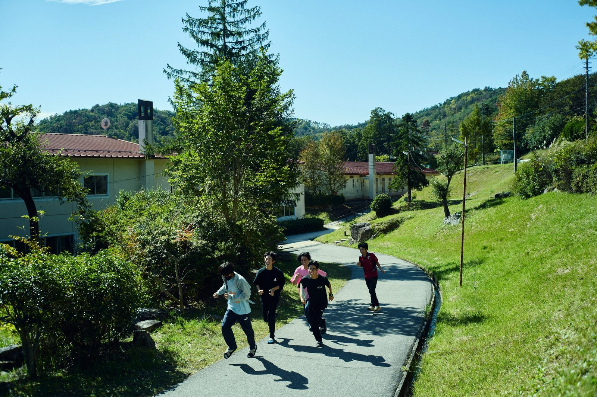
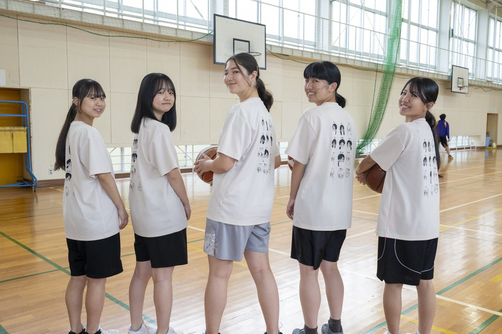

可愛い子には旅をさせよ、
は本当でした。在校生保護者の声より

今年も12/9（水）18:00 東広島くららで、生徒たちがクリスマスコンサートを開きます12/13（日）大阪で、生徒たちがクリスマスコンサートを開きます →

広島三育学院は、中学生から高校生までが同じ寮で暮らす全寮制の学校です。演奏する中高生の聖歌隊とハンドベルは、毎日の寮生活の中で練習を重ねてきました。中には12歳から寮で暮らしている生徒もいます。
広島三育学院は、中学生から高校生までが同じ寮で暮らす全寮制の学校です。大阪で歌う高校生の聖歌隊は、毎日の寮生活の中で練習を重ねてきました。中学から入学し、12歳から寮で暮らしている生徒もいます。
会場には学校の先生がいます。寮のこと、入試のこと、お気軽にお声がけください。
かわいい子には旅をさせよとは、本当でした。我が子を12歳で旅に出すのは寂しかったですが、たくましく成長してくれました。
高校2年生の保護者
いろいろ大丈夫かな…全て不安でした。
子のできないことを探すのではなく、今の姿を認めて一緒に笑えるようになりました
ホームシック。身の回りのことを自分でできるかどうか。
何を聞いても「わからない」と答えていたのが、自分の意見を言うようになり、人の意見も聞く耳を持つようになりました。
寮生活で友達と仲良くやっていけるか
小学生の時は、やってもらって当たり前で、感謝することもなかったですが、寮生活をし、親の有り難さを感じたようで、親に感謝の言葉を伝えてくれるようになりました。

寮の談話室で。寮の先生がいつもそばにいます。
広島三育学院は、広島県三原市の山あいにある全寮制・男女共学の中高一貫校です。「生きるを、育む。」を掲げ、毎日の4つの場面で、知性・身体性・霊性・社会性を育てます。

食事も自治も、仲間と一緒に。親元を離れた共同生活の中で、自分のことを自分でする力が育ちます。
教師1人に生徒8人。一人ひとりの顔が見える距離で、自分で考え、言葉にする授業を大切にしています。

ソアン、労作、音楽、部活動。生徒の8割以上が、聖歌隊やハンドベル、ブラスバンドなどの音楽活動に参加しています。
礼拝や聖書、安息日の時間を通して、「何のために生きるのか」を考えます。
東広島では中高生の聖歌隊とハンドベルが、大阪では高校生の聖歌隊が演奏します。会場には学校の先生がいます。
入場無料・予約不要です。
ご都合のよい日に、ご家族だけで校舎と寮をご案内します。冬休み中も受け付けています。入学・転入のご相談も随時お受けしています。

| 1期 出願 | 12/2（水）〜1/7（木） |
|---|---|
| 学校説明会（本校） | 1/11（月・祝） |
| 2期 出願 | 1/18（月）〜1/25（月） |
| 3期 出願 | 2/8（月）〜2/15（月） |
AOエントリーをしていなくても、1期〜3期のどの時期でも出願できます。
最初は寂しさを感じる子もいます。寮は、心も体も休まる「家」。生徒も寮監も、第二の家族として暮らしています。在校生の保護者からは、こんな声が届いています。
「子供の可能性を信じて送り出してあげてください。子供は私たちが思っているよりずっと柔軟性があり可能性を秘めてます。」
中学3年生の保護者
寮や学校での様子は、寮監や担任がつくる保護者との連絡グループで、写真付きで共有しています。各寮には外線電話と寮の携帯電話があり、ご家庭と連絡が取れます。
夏・冬・春休みは寮を閉め、全員が自宅に帰ります。5月と10月には希望者が帰れる中間休み（4泊5日）があります。6月と11月の保護者会の翌日は学校の指定休日で、ご家族と外泊できます。
中学生は持ち込みできません。高校生は許可制で、消灯前の25分間に使えます。ご家庭との連絡は、各寮の外線電話と寮の携帯電話でできます。
毎日19:30〜21:30が自習時間です。希望者は早朝学習（4:00〜6:00）や延灯学習（22:00〜24:00、許可制）もでき、試験前は時間を広げて対応します。教師1人に生徒8人の少人数です。
健康の原則に基づく菜食を、毎食、食堂でみんなでいただきます。朝夕の礼拝が一日のリズムで、金曜の夕方は日没礼拝とベスパーで安息日を迎えます。
キリスト教の背景を持たないご家庭からも、多くの生徒が入学しています。初めて聖書に触れる方も、安心してお越しください。
本校はセブンスデー・アドベンチスト教会の教育理念に基づく学校で、朝夕の礼拝、聖書の授業、土曜日の安息日など、信仰に触れる時間が生活の中心にあります。大切にしているのは、信仰を押しつけることではなく、人生の「根っこ」を育てることです。洗礼は卒業の条件ではありません。
中学校の月額は、授業料34,000円、実験実習費・施設設備費8,500円、寮教育費24,500円、食費33,000円、その他諸経費（学習費・積立金など）10,000円〜で、合計110,000円〜です。
授業料を上限に毎月支給される広島三育学院奨学金（無利子の貸与）、兄弟姉妹・系列校・卒業生の子女向けの入学金の優待割引、中学AO入試の受験者などを対象にした奨学金・兄弟特別支援があります。詳しくは資料でご案内します。
お電話でのお問い合わせ 0847-33-0311（平日17時まで）
広島三育学院中学校・高等学校（広島県三原市大和町下徳良296-2）